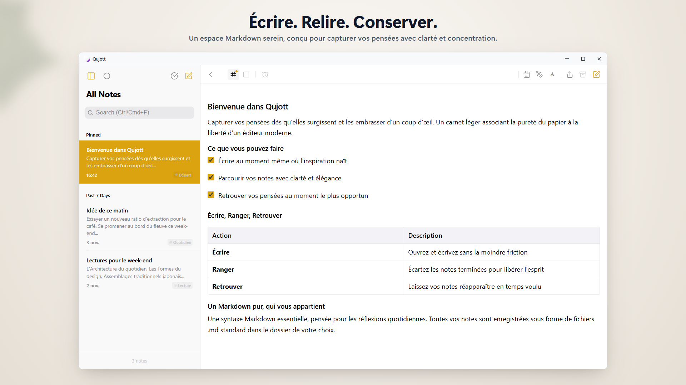
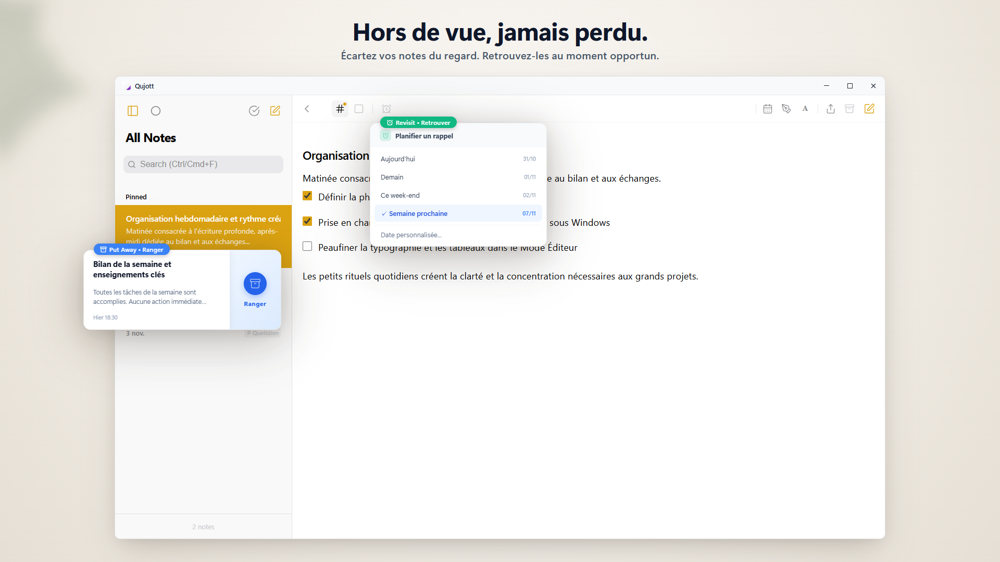
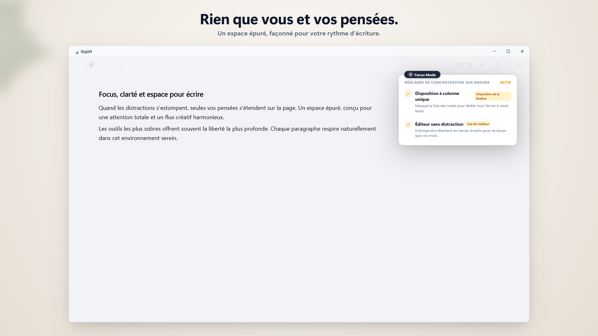
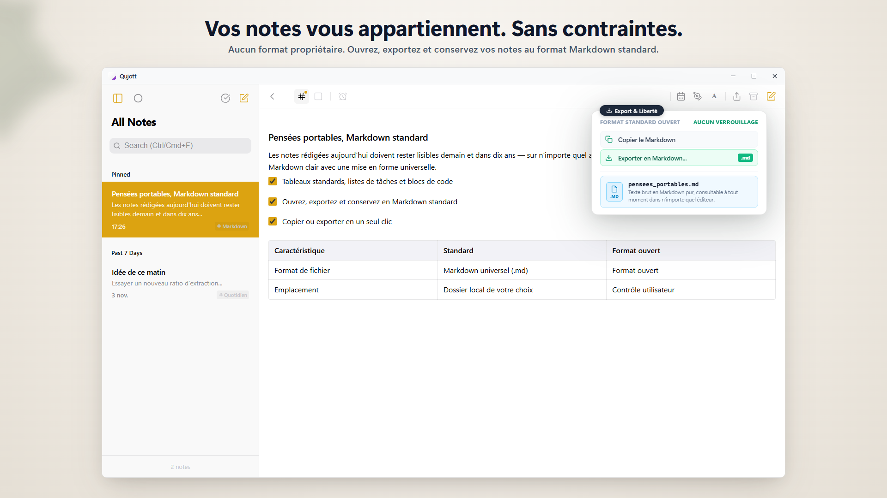
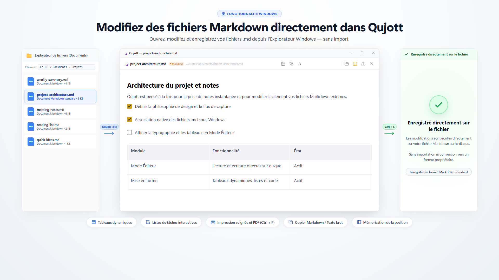
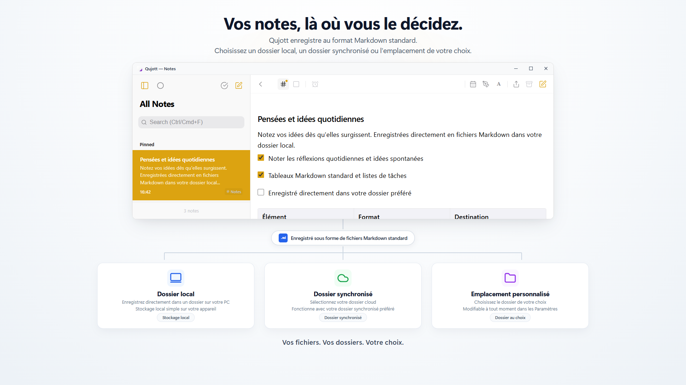
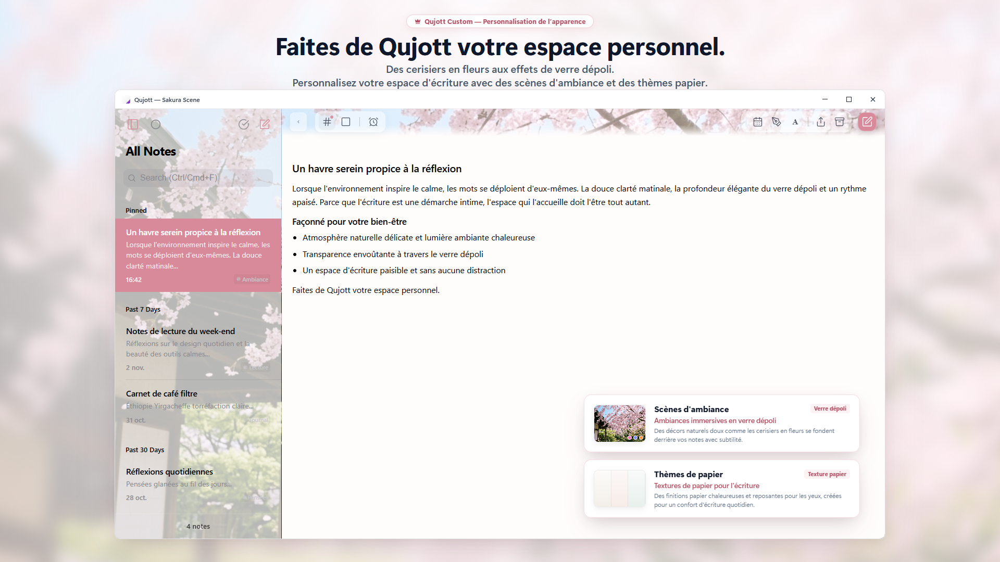
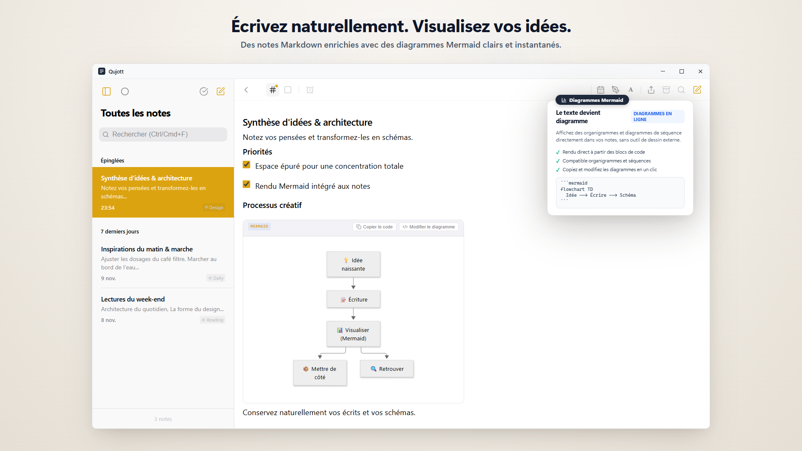
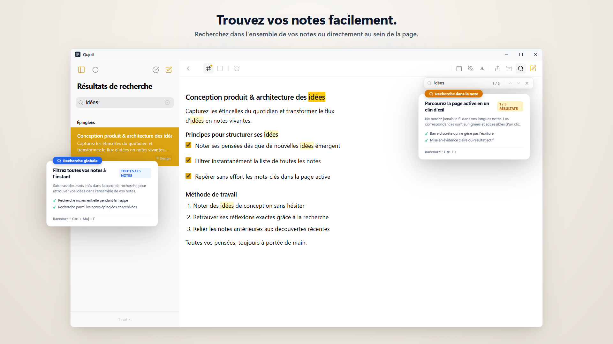

Qujott
Notez vos idées sur le vif,
et retrouvez-les quand vous le souhaitez.
Qujott réunit la simplicité d'un bloc-notes papier et la polyvalence d'un éditeur de texte dans un carnet numérique léger.
Rangez plus tard. Gardez vos pensées à portée de main.
Compatible avec le Markdown standard. Enregistrez et modifiez vos notes sous forme de fichiers texte brut, là où vous le choisissez.

Un espace épuré à deux volets qui garde vos pensées et vos notes naturellement sous les yeux
Comme un bloc de papier posé à côté de votre clavier.
Qujott n'est ni une base de connaissances complexe ni un gestionnaire de tâches surchargé.
Comme un vrai calepin sur votre bureau, il est pensé pour une seule chose : écrire à la seconde même où une pensée surgit.
Aucun dossier préalable ni étiquette imposée avant d'écrire.
Posez simplement vos pensées et gardez-les près de vous. Vous pourrez les ordonner plus tard à votre rythme.
Rangez vos notes avec douceur et retrouvez-les au bon moment.
Une note terminée ? Mettez-la de côté (Put Away) sans la supprimer pour aérer votre espace.
Grâce à Revisit, faites-la réapparaître aujourd'hui, demain ou la semaine prochaine. Sans alarme bruyante : des retrouvailles naturelles au moment propice.

Mettez vos notes de côté pour préserver votre clarté d'esprit et revisitez-les quand il le faut
Immergez-vous pleinement dans l'écriture.
Passez en Focus Mode sur un seul volet pour faire disparaître barres latérales et distractions visuelles.
Un cadre apaisé et dépouillé conçu pour laisser s'écouler librement vos pensées.

Le Focus Mode supprime tout superflu pour vous laisser seul avec vos mots
Vos mots vous appartiennent.
Toutes les notes dans Qujott sont enregistrées sous forme de fichiers Markdown standard (.md).
Aucun format propriétaire. Vous pouvez les ouvrir, les éditer et les exporter à tout moment dans l'éditeur de votre choix.

Notes enregistrées en Markdown standard (.md). Liberté totale pour lire, modifier et exporter
Ouvrez et modifiez directement des fichiers Markdown existants.
Ouvrez vos fichiers Markdown existants directement dans Qujott, modifiez-les et enregistrez les changements sur le fichier original (Ctrl+S).
Aucune importation ni conversion de format. Utilisez Qujott comme éditeur Markdown simple et fluide au quotidien.

Ouvrez et modifiez directement des fichiers Markdown dans Qujott avec sauvegarde directe (Editor Mode)
Vous choisissez où résident vos notes.
Choisissez n'importe quel dossier sur votre PC : dossiers locaux, cloud synchronisé ou disques externes.
Vous pouvez utiliser Qujott sans avoir besoin de créer un compte dans le cloud.

Libre choix de l'emplacement : dossiers locaux, cloud synchronisé ou disques externes
Façonnez votre propre espace d'écriture.
Personnalisez votre cadre avec des Scènes d'ambiance immersives (comme Sakura), du verre dépoli et des thèmes papier (Qujott Pro, achat unique).
Avec l'échelle d'affichage de l'interface (80 % à 160 %), adaptez l'application à votre écran pour un confort idéal.

Un cadre d'écriture sur mesure. Personnalisez-le avec des scènes d'ambiance et l'échelle d'affichage.
Écrivez naturellement. Visualisez vos idées.
Dans le prolongement naturel de votre écriture Markdown, affichez des organigrammes, diagrammes de séquence ou cartes heuristiques Mermaid directement dans la même note.
Insérez des modèles depuis le menu de mise en forme, sans ouvrir un autre outil de dessin.

Rédigez en Markdown simple et affichez vos diagrammes Mermaid au sein de la même note
Retrouvez vos pensées en un instant.
Filtrez l'ensemble de vos notes depuis la liste (Ctrl+Shift+F) ou accédez directement aux occurrences dans la note en cours d'édition (Ctrl+F).
Revenez facilement vers ce que vous avez déjà écrit.

Recherche globale dans toutes vos notes (Ctrl+Shift+F) et recherche dans la note active (Ctrl+F)